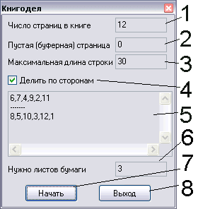

Назад
~BookGen
Описание:
Программ сделана для быстрого и простого создания книг под MicroSoft Word 97 & 2000 и другими. Вероятно,
аналогичный алгоритм можно применять и к другим программам. Описание рассчитано на то, что пользователь
использует русифицированную версию, в противном случае придется ориетнироваться на ходу...
Решаемая задача: печать обычного документа в виде книги (как в типографии), не используя накакого
дополнительного ПО или специального принтера. Для работы необходимо проделать следующие шаги:
- Преобразуйте документ в формат А5x2 (по умолчанию, все работают с А4, или Letter). Для этого
выполните Файл>Параметры страницы>Размер бумаги. Здесь укажите: размер бумаги - А4, ориентиция -
альбомная. Теперь перейдите на вкладки Макет и Источник бумаги и установите нужные параметры. Перейдите
на вкладку Поля и установите флажок "2 страницы на листе". Установите нужные значения полей. Тут моя
рекомендация - уменьшайте значения, насколько возможно, но не менее 1 см. Примените настройки кнопкой
OK. Конечно, поползут по сторонам картинки и может нарушиться некоторое форматирование. Документ нужно
просмотреть и исправить, если что не так. Окно предварительного просмотра, как показывет практика,
помогает слабо, поэтому для подобного редактирования используйте режим разметки (в левом нижнем углу окна
с текстом есть три кнопки. Нужно убедиться, что третья справа нажата).
- После всех экзекуций, узнайте количество страниц текста (статусная строка, первый раздел, третья
группа, второе число). Запустите КнигоДел и введите это чисто в поле "Число страниц в книге". Обратите
внимание, что по умолчанию в поле "Буферная страница" стоит число 0. Поэтому, если число страниц в Вашей
книге не кратно 4, программа выдаст предупреждающее сообщение и не сгенерирует последовательность. В этом
случае, необходимо создать в документе последнюю пустую страницу (но не включать ее в общее количество,
например, если в Вашем документе 9 страниц, то после добавления буферной страницы, Вы получите 10 страниц
в документе, но вводить нужно 9, а не 10). Для добавления пустой страницы, установите курсор на конец
документа и выполните Вставка>Разрыв>Новая страница>OK. Теперь вместо 0 в поле "Буферная страница" введите
номер пустой страницы (в нашем примере это 10). По умолчанию в поле "Макс. длина строки" стоит 30. Это означает,
что итоговая комбинация будет разбита на строки длины, не превышающей указанную. Если Вы хотите закончить
перенос строк в Word поскорее, увеличьте значение, но не свыше 250.
- Нажмите "Создать". В текстовом поле появятся строчки. Теперь для печати книги нужно отсчитать
количество листов, указанное в соответствующем поле и вложить их в принтер. Можно также поставить галочку
"Делить по сторонам".
- Скопируйте строчки до разделителя и в окне Word выполните Файл>Печать и в поле "Номера" введите скопированную
строку. Начните печать. После окончания печати, переверните все страницы вдоль короткой стороны и вновь вставьте в
принтер, после чего отправьте оставшиеся страницы на печать.
- Сшейте итоговую книгу степлером!
Особенности:
- Не завершайте работу программы до вставки последней строчки в Word.
- Если Вы используете колонтитулы, я настоятельно рекомендую удалить колонтитулы на буферной
странице, либо дополнить документ пустыми страницами до числа страниц, кратного 4 вручную.
- Перед тем, как печатать реальные документы, рекомендую потренироваться, скажем, на четырехстраничном
(после форматирования) документе, чтобы знать, как переворачивать страницы и избежать печальных последствий,
связанных с порчей бумаги. Программа ориентирована на работу со струйным принтером, при работе с лазерным могут
возникнуть непредвиденные осложнения.
- Не путайте строчки местами! Это приведет к невозможности сбора книги.

- Укажите здесь число страниц в книге
- Укажите здесь номер пустой страницы. Если число страниц в документе кратно 4, можно оставить 0.
- Максимальная длина строки в выходном поле.
- Желательно оставить эту галку установленной. Тогда вы должны напечатать все страницы первой группы, затем
перевернуть страницы и печатать остаток. Иначе придется отсчитывать число страниц (см. пункт 6)
- Поле, откуда следует копировать построчно последовательности для печати.
- Число листов, которое необходимо положить в принтер. Если галка 4 установлена, то можно не отсчитывать
листы вручную.
- Кнопка начала. После ее нажатия, поле 5 заполнится корректными данными. Также можно нажать Enter в полях ввода.
- Выход с сохранением параметров. Также можно нажать Esc.